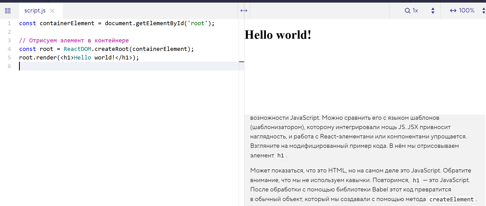

Мы отрисовали первый элемент с помощью React, но в чём же преимущество? Пример кода похож на изначальный, только поменялись названия объектов. Кажется, что React ничего не решает.
Всё меняется, когда приходит JSX, который расширяет возможности JavaScript. Можно сравнить его с языком шаблонов (шаблонизатором), которому интегрировали мощь JS. JSX привносит наглядность, и работа с React-элементами или компонентами упрощается. Взгляните на модифицированный пример кода. В нём мы отрисовываем элемент h1.
Может показаться, что это HTML, но на самом деле это JavaScript. Обратите внимание, что мы не используем кавычки. Повторимся, h1 — это JavaScript. После обработки с помощью библиотеки Babel этот код превратится в обычный объект, который мы создавали с помощью метода createElement
